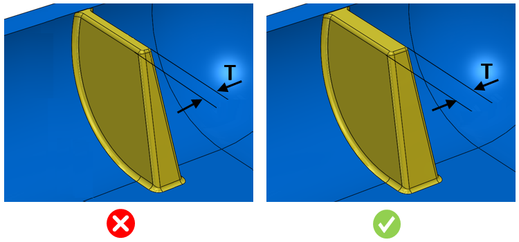

リブ先端部の肉厚は、ユーザーが指定した値に従う必要があります。
プラスチック部品の設計では、部品を容易に取り出すために適切な抜き勾配角度が必要です。抜き勾配角度はリブフィーチャーにも適用されます。
リブフィーチャーでは、リブ先端部の肉厚を表す抜き勾配を適用するために、上面が固定位置となります。
リブが非平面（曲面など）の上に存在する場合、リブフィーチャー先端部の肉厚を考慮する必要があります。最小肉厚のままリブが高すぎると、リブの構造的健全性に影響を及ぼす可能性があります。そのようなリブが高荷重を受けると見込まれる場合には、補強リブを追加する必要があります。リブ設計を最適化するために、適切なリブ肉厚およびリブ高さを維持する必要があります。
一般的に、リブ先端部では最小 0.8 mm の肉厚を確保する必要があります。ただし、リブ高さによっては変わる場合があります。
DFMPro はリブを識別し、リブ先端部の最小肉厚を設定値と比較してチェックします。
ルール UI では、材料の一覧が Map Material から読み込まれ、ユーザーは材料およびその値を設定することができます。
材料およびその値を設定した後、ユーザーは Ctrl+M コマンドを使用して、ルール UI 内で材料グループおよびグレードごとに設定済み材料の一覧をフィルタ表示することができます。同じキー（Ctrl+M）を使用して、フィルタをリセットすることもできます。

ここで、
T = リブ先端部の肉厚